Viewing Model Information
General Info
KEGG Maps
Reaction Tab
Compound Tab
Gene Tab
General Info
After you have selected a model, you can use the tools within the Model SEED to
examine the information for that model. The tools organize the data associated with the
model into maps and tables that make it easy for the user to search or browse for relevant
information.
Upon selecting the model, you are greeted with an overview page. This contains information about the
organism and the model. You can download the complete model in differnet formats (SBML, Model SEED, and LP),
and deselect this model from this page as well.
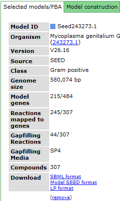
Underneath the first set of tabs is another tabbed interface which contains the model information.
top
KEGG Maps
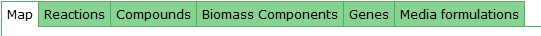
One way the data is organized is by KEGG pathways. The model information is overlaid
onto the KEGG maps with a color scheme to determine the state of the compounds and reactions.
To see a list of all the available maps, click the "Map Select" bar.
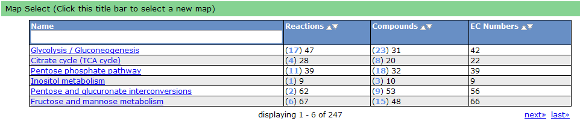
Clicking on one of the links causes the new map to show up in place of the current map.
A legend tells the user how to interpret the colors. The compounds (circles) can have
the following attributes: Transported, Represented, or Biomass. If the compound is gray,
then it is not in the model. The reactions (rectangle) are colored according to the organism
that is currently selected. If a reaction appears purple, then it is gapfilled.
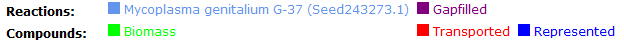
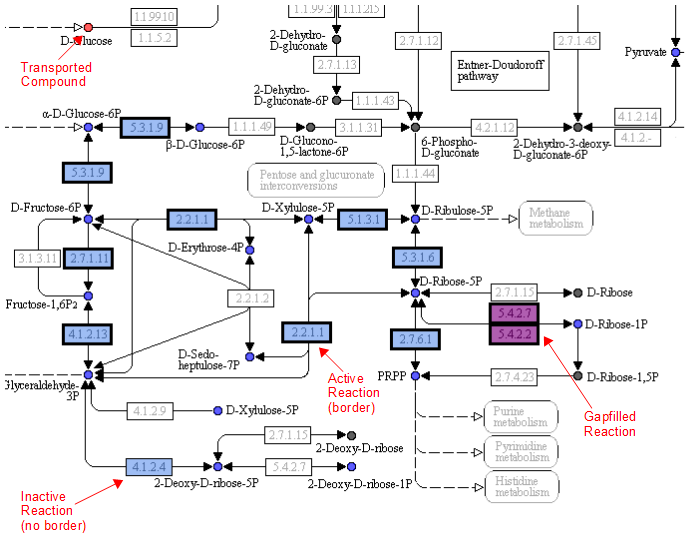
top
Reaction Tab
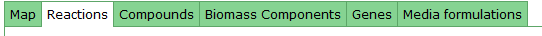
To view all the reactions in the model, click on the 'Reactions' tab. This brings up a
table containing each reaction and some general information. The table contains
the following columns:
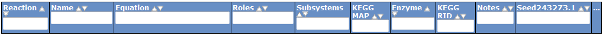
This table can be searched and sorted via the column headers. Also, you can hide columns
by clicking on the '...' in the last column and unselecting column names.
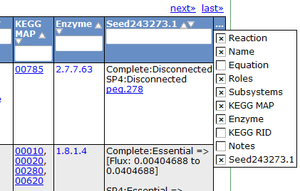
Here is an overview of the links inside the reaction table.
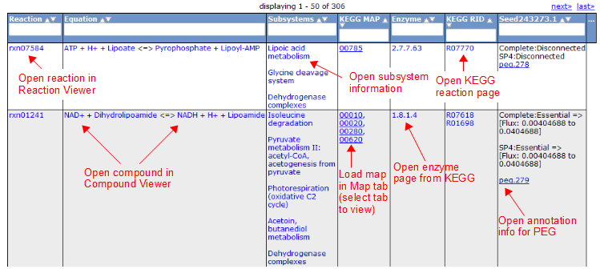
top
Compound Tab
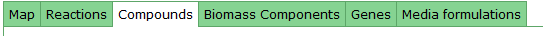
To view all the compounds in the model, click on the 'Compounds' tab. This tab contains a
table with additional information about each compound.
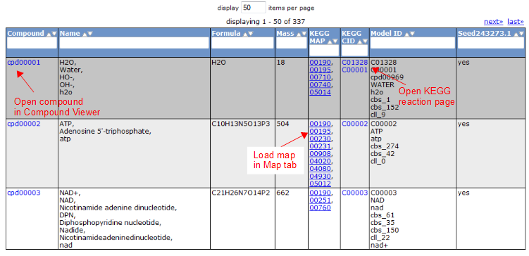
top
Gene Tab
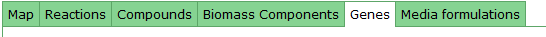
Selecting the 'Gene' tab brings up a table containing all the genes in the model.
This table shows information about the gene, such as the peg annotation, the functional assignment,
and the essentiality.
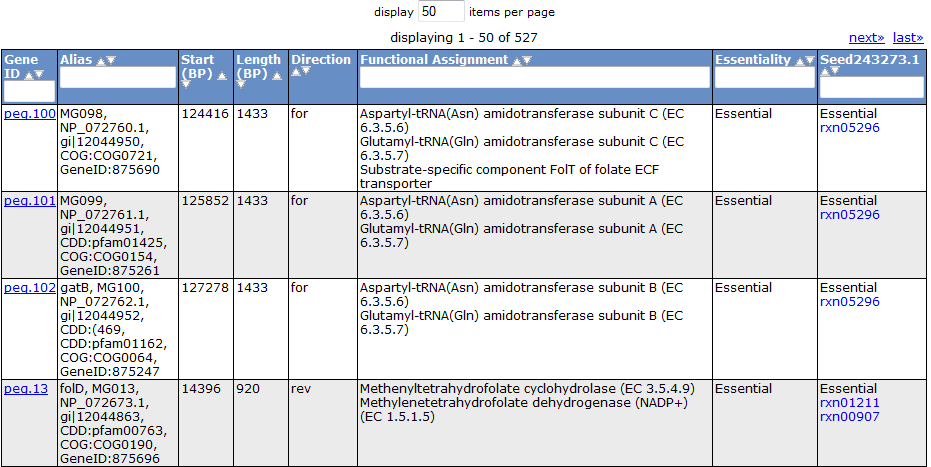
Clicking on one of the peg links opens a new page devoted to that peg annotation in the
currently selected organism. For example, the below image was for 'peg.100' in the table
above. This is just a sample of some of the information shown on this page.

top